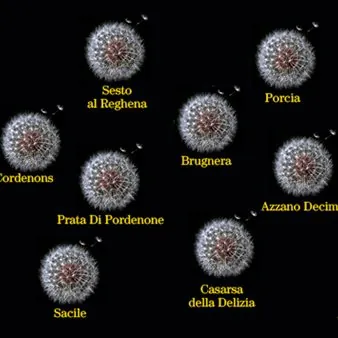

da mar 17 nov a gio 19 nov
Pordenonelegge 2026
La festa del libro con gli autori anima Pordenone e altre località del territorio con incontri, presentazioni, dialoghi e appuntamenti dedicati alla lettura.
 Indicazioni
Indicazioni
- Costi e prenotazioni
- Costo non indicato · Prenotazione non indicata
- Programma
- Programma raccolto. Gli appuntamenti delle diverse schede sono riuniti in questa pagina.
- In caso di maltempo
- Nessuna indicazione specifica pubblicata.
- Note
- Le schede dei singoli appuntamenti sono state unite nella manifestazione principale.
L’EVENTO
Descrizione completa
Il Festival finisce, la stagione dei libri continua e si mette in viaggio: torna pordenonelegge Fuoricittà_Autunno , la stagione letteraria diffusa sul territorio, un mese nel quale romanzi, saggi, gialli, memoria, attualità e nuove uscite editoriali diventano altrettante occasioni di incontro e conversazione.
Un progetto organizzato da Fondazione Pordenonelegge.it, in stretta sinergia con ciascuna delle Amministrazioni comunali coinvolte, concepito perché l’incontro con gli autori resti un’esperienza accessibile: la partecipazione agli appuntamenti è sempre libera e gratuita, con prenotazione consigliata (info e dettagli pordenonelegge.it).
A Maniago, lo scrittore Matteo Bussola dialoga con Michela Fregona intorno al nuovo libro Il sole nelle pozzanghere (Einaudi, 2026): in una piccola bottega di rigattiere gli oggetti usati custodiscono le tracce delle vite che hanno attraversato, e cucine, orologi, cartelle, chitarre e orecchini diventano depositi di memoria, amori, perdite e possibilità di ricominciare.
Giovedì 19 novembre alle ore 20.45 , nell'Auditorium Olinto Contardo , Spilimbergo , lo scrittore Tullio Avoledo, in dialogo con l'autore e curatore di pordenonelegge Alberto Garlini, racconterà " L'ultimo valzer di una ragazza perbene " (Neri Pozza, 2026).
Una trama gialla attraversata dal rapporto fra generazioni, segreti e doppie vite digitali.
L'avvocato Vittorio Contrada viene richiamato dal proprio passato da una vecchia compagna di liceo e dalla minaccia che incombe sulla figlia di lei. Ma ciò che appare non coincide necessariamente con ciò che accade dietro gli schermi: Avoledo intreccia con maestria indagine, memoria, ipocrisie adulte e identità digitali.
IL PROGRAMMA
Programma e orari
Le singole date appartengono alla stessa manifestazione. Ogni sede verificata dispone delle proprie indicazioni.
Martedì 17 novembre · Pordenonelegge Fuoricittà_Autunno
Maniago · Ridotto del Teatro Verdi di Maniago
- Il Festival finisce, la stagione dei libri continua e si mette in viaggio: torna pordenonelegge Fuoricittà_Autunno, la stagione letteraria diffusa sul territorio, un mese nel quale romanzi, saggi, gialli, memoria, attualità e nuove uscite editoriali diventano altrettante…
Giovedì 19 novembre · Fuoricittà: Pordenonelegge
Spilimbergo · Auditorium Olinto Contardo, Via Udine, Spilimbergo
- Giovedì 19 novembre alle ore 20.45, nell'Auditorium Olinto Contardo, Spilimbergo, lo scrittore Tullio Avoledo, in dialogo con l'autore e curatore di pordenonelegge Alberto Garlini, racconterà "L'ultimo valzer di una ragazza perbene" (Neri Pozza, 2026). Una trama gialla…
INFORMAZIONI UTILI
Prima di partire
- Controllare la fonte prima di partire.
ORGANIZZAZIONE